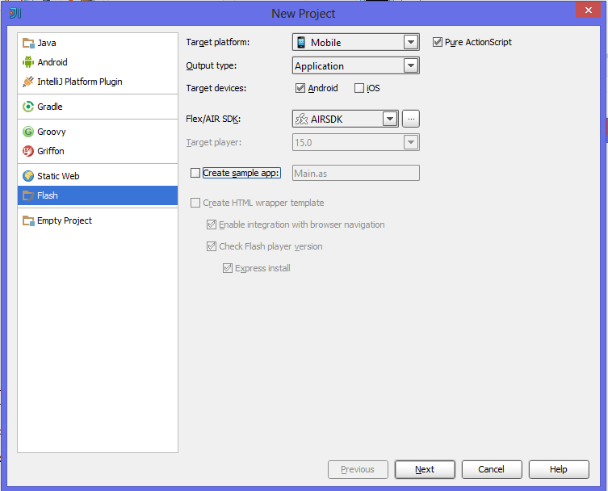
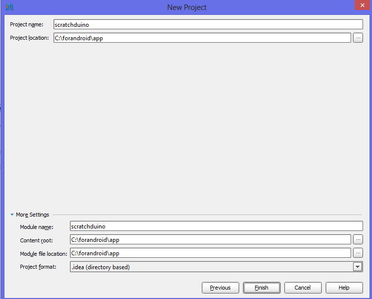

Запускаем IntelliJ IDEA Ultimate. Создаем новый проект flash. Выбираем все, как на скриншоте. Flex/AIR sdk пока нет, укажем IDEA его местоположение потом.
Flex/AIR sdk пока нет, укажем IDEA его местоположение потом.
Указываем название (любое - отразится лишь на названии проекта, но никак не повлияет на приложение) и путь к исходникам.
Перейдем в настройки проекта (ctrl + alt + shift + s или File - Project structure) во вкладку Project.
Скачиваем AIR SDK (15 версия)
Указываем путь к AIR SDK - конкретно к папке com.adobe.flash.compiler_4.7.X.XXXXXX/AIRSDK (еще раз подчеркну, к папке AIRSDK)
Вкладка Libraries - зеленый плюсик сверху - добавим папку app/libs в корне исходников.
Вкладка Modules - вкладка General - укажем основной класс (Scratch):
Вкладка Modules - вкладка Android - Application descriptor: Scratchduino-app.xml
Вкладка Modules - вкладка Dependencies - зеленый плюсик справа - Project or global library - библиотеки, добавленные на шаге 4.
Вкладка Modules - вкладка Android - зеленый плюсик справа - две иконки из app/src/assets
Build - Package AIR Application соберет вам приложение. При сборке отключать captive runtime.